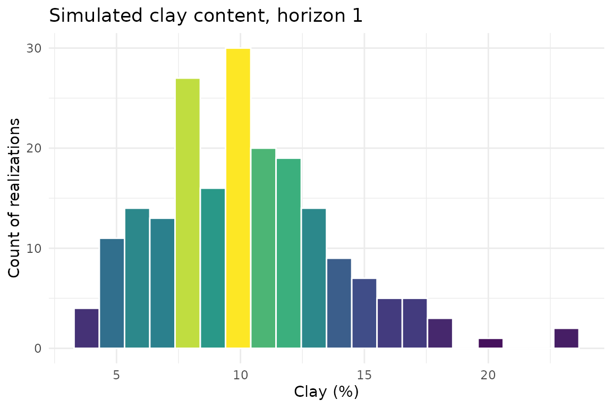
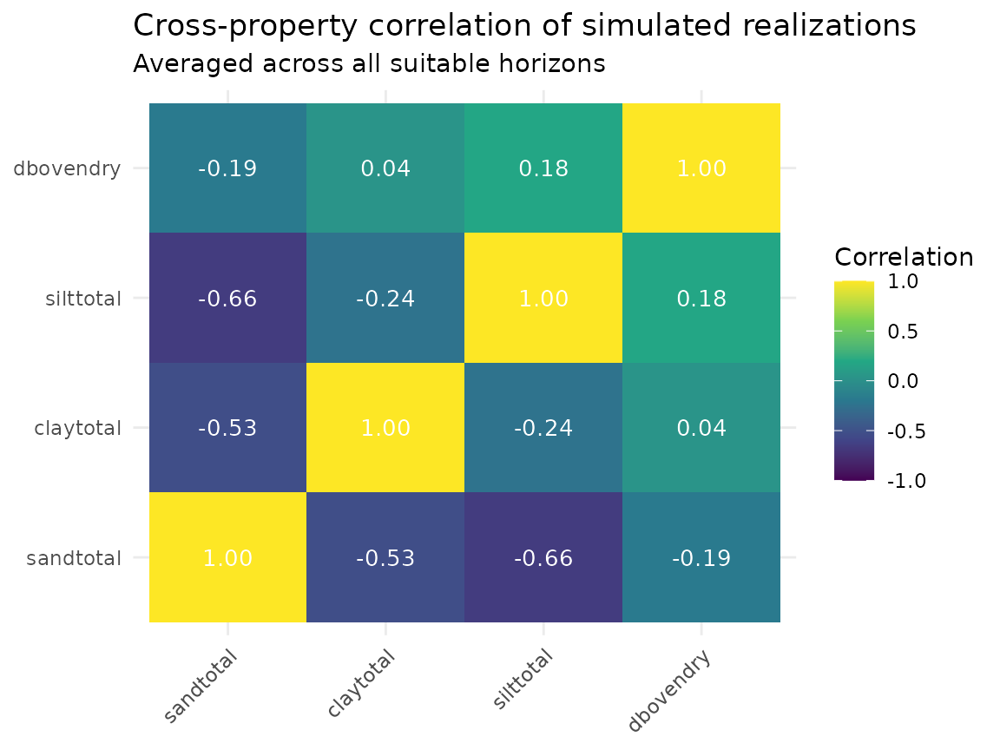
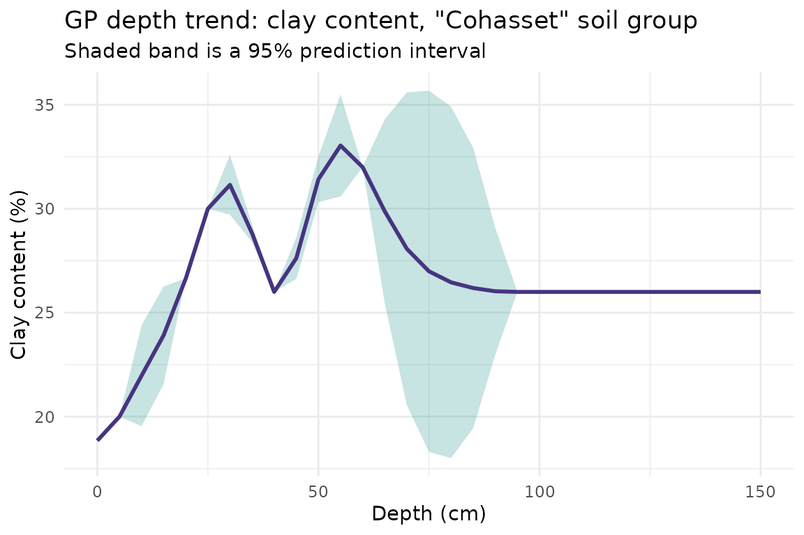

Getting Started: Tabular Monte Carlo Simulation from SSURGO
Source:vignettes/getting-started-monte-carlo.Rmd
getting-started-monte-carlo.RmdOverview
This vignette walks through soilSIM’s core tabular pipeline end to end, using real SSURGO data for a small area of interest (AOI) in the Sierra Nevada foothills of Amador County, California:
- Download and clean real SSURGO tabular data for the AOI
- Fill in missing property values
- Fit percentile-triplet distributions and run a correlated Monte Carlo simulation
- Characterize the simulated output statistically
- Fit Gaussian-process depth-trend models as a next step toward depth-aware simulation
Every number in this vignette originated from a real download against
NRCS Soil Data Access - see the “Where this data came from” note below.
See soilSIM/docs/01_data_acquisition_processing.md,
03_distribution_fitting_correlations.md,
04_monte_carlo_simulation.md, and
05_gp_modeling_multivariate_adjustment.md for the full
function-level reference behind each step.
Step 1: Acquire and process real SSURGO data
The AOI is a small polygon (about 1 km x 1 km) near Amador County, CA:
amador_wkt <- "POLYGON((-120.5 38.5, -120.4 38.5, -120.4 38.6, -120.5 38.6, -120.5 38.5))"download_and_prepare_ssurgo() queries NRCS Soil Data
Access live for this AOI, then filters to a maximum depth. That call is
shown here for reference, but this vignette loads a cached copy of its
real output so the vignette builds without a live network
dependency:
# The real call this vignette's cached data came from:
ssurgo_amador <- download_and_prepare_ssurgo(
aoi_wkt = amador_wkt,
properties = c("sandtotal", "claytotal", "silttotal", "dbovendry", "ph1to1h2o",
"cec7", "om", "wthirdbar", "wfifteenbar"),
max_depth = 150
)
ssurgo_amador <- readRDS(system.file("extdata", "ssurgo_amador.rds", package = "soilSIM"))
raw_data <- ssurgo_amador$ssurgo_data
dim(raw_data)
#> [1] 474 65
length(unique(raw_data$cokey))
#> [1] 78
length(unique(raw_data$mukey))
#> [1] 66This AOI resolves to 66 real map units and 78 soil components.
process_ssurgo_data() cleans and standardizes the raw
download - flagging unsuitable horizons (bedrock, cemented pans, organic
layers) that shouldn’t feed property simulation:
processed <- process_ssurgo_data(raw_data, max_depth = 150, verbose = FALSE)
horizon_data <- processed$processed_data
sum(horizon_data$unsuitable_horizon)
#> [1] 53Step 2: Fill in missing property values
Real SSURGO data has gaps -
process_soil_properties_comprehensive() fills them in using
pedologically informed recovery strategies (horizon-name matching,
depth-weighted averaging, related-property estimation) rather than a
blind mean-impute:
properties <- c("sandtotal", "claytotal", "silttotal", "dbovendry")
infilled <- process_soil_properties_comprehensive(horizon_data, properties = properties, verbose = FALSE)
mean(infilled$property_data_complete, na.rm = TRUE)
#> [1] 1Step 3: Fit distributions and run the Monte Carlo simulation
soilSIM’s percentile-triplet fitter
(fit_percentile_triplet()) turns each property’s SSURGO
low/representative/high values into a fitted distribution. For clay
content in the first suitable horizon:
first_row <- infilled[!infilled$unsuitable_horizon, ][1, ]
clay_fit <- fit_percentile_triplet(
l = first_row$claytotal_l, r = first_row$claytotal_r, h = first_row$claytotal_h,
family = "normal"
)
quantile_from_fit(u = c(0.05, 0.5, 0.95), family = clay_fit$family, fit = clay_fit$fit)
#> [1] 5 10 15generate_monte_carlo_realizations() is the master
pipeline: it does this fitting for every property/horizon, estimates (or
falls back to a KSSL reference) correlation structure across properties,
and draws correlated realizations:
mc_result <- generate_monte_carlo_realizations(
soil_data = infilled,
properties = properties,
n_realizations = 200,
simulation_config = list(
max_depth = 150,
auto_correlation = TRUE,
correlation_fallback = "kssl_global"
),
parallel = FALSE,
seed = 123
)
dim(mc_result$simulation_data) # [horizon, property, realization]
#> [1] 421 4 200
mc_result$metadata$success_rate
#> [1] 1
mc_result$quality_assessment$overall_quality_score
#> [1] 1421 suitable horizons x 4 properties x 200 realizations, at a 100% success rate. Distribution of simulated clay content across all realizations, for the first horizon:
clay_col <- match("claytotal", properties)
clay_realizations <- data.frame(clay = mc_result$simulation_data[1, clay_col, ])
ggplot(clay_realizations, aes(x = clay, fill = after_stat(count))) +
geom_histogram(bins = 20, color = "white") +
scale_fill_viridis_c() +
theme_minimal() +
labs(
title = "Simulated clay content, horizon 1",
x = "Clay (%)",
y = "Count of realizations"
) +
theme(legend.position = "none")
The Monte Carlo engine’s whole point is preserving cross-property
correlation structure, not just marginal distributions - it’s worth
checking that this actually happened.
mc_result$simulation_data is a
[horizon, property, realization] array; the correlation
matrix below is computed across realizations for each horizon, then
averaged over all suitable horizons:
prop_names <- dimnames(mc_result$simulation_data)[[2]]
n_horizons <- dim(mc_result$simulation_data)[1]
n_props <- length(prop_names)
cor_by_horizon <- array(NA_real_, dim = c(n_props, n_props, n_horizons))
for (h in seq_len(n_horizons)) {
realizations_by_property <- t(mc_result$simulation_data[h, , ])
cor_by_horizon[, , h] <- cor(realizations_by_property, use = "pairwise.complete.obs")
}
mean_cor <- apply(cor_by_horizon, c(1, 2), mean, na.rm = TRUE)
dimnames(mean_cor) <- list(prop_names, prop_names)
cor_df <- as.data.frame(as.table(mean_cor))
names(cor_df) <- c("property_1", "property_2", "correlation")
ggplot(cor_df, aes(x = property_1, y = property_2, fill = correlation)) +
geom_tile() +
geom_text(aes(label = sprintf("%.2f", correlation)), color = "white", size = 3.5) +
scale_fill_viridis_c(limits = c(-1, 1), name = "Correlation") +
theme_minimal() +
labs(
title = "Cross-property correlation of simulated realizations",
subtitle = "Averaged across all suitable horizons",
x = NULL, y = NULL
) +
theme(axis.text.x = element_text(angle = 45, hjust = 1))
Step 4: Characterize the simulated data statistically
analyze_soil_statistics() runs correlation analysis,
distribution fitting, and outlier detection on the processed data (the
same real Amador dataset from Step 1):
stats_result <- analyze_soil_statistics(horizon_data, verbose = FALSE)
stats_result$analysis_metadata$properties_analyzed
#> [1] 16Step 5: Toward depth-aware simulation - Gaussian process depth trends
The Monte Carlo simulation above treats every suitable horizon
independently. soilSIM’s GP modeling group
(build_stratified_gp_models()) fits depth-trend models per
soil group, so simulated properties can follow a realistic depth trend
rather than horizon-by-horizon independence.
prepare_nrcs_training_data() automatically selects a
grouping strategy - for this AOI, it selects grouping by soil
series:
gp_train <- prepare_nrcs_training_data(horizon_data, max_depth = 150)
table(gp_train$soil_group)
#>
#> Chaix Cohasset Holland Josephine Mariposa McCarthy
#> 24 98 21 81 30 60
gp_models <- build_stratified_gp_models(
gp_train,
properties = c("clay_pct", "sand_pct", "pH", "organic_matter"),
min_profiles_per_group = 3,
min_observations_per_group = 15,
optimize_hyperparameters = FALSE
)
gp_models$model_summary$total_models
#> [1] 2222 GP models were fit across 6 real soil-series groups from this AOI.
Each fitted model predicts a property’s mean depth trend (with
uncertainty) for its soil-series group via
predict_gp_depth_trends(). For clay content in the first
group:
clay_groups <- names(gp_models$clay_pct$models)
first_group <- clay_groups[1]
clay_gp_model <- gp_models$clay_pct$models[[first_group]]
depth_seq <- seq(0, 150, by = 5)
gp_mean <- predict_gp_depth_trends(clay_gp_model, depth_seq)
# predict_gp_depth_trends() returns the fitted mean only; pull the prediction
# variance directly from GPfit to draw an uncertainty band around it
scaling <- clay_gp_model$depth_scaling
scaled_depths <- pmax(0, pmin(1, (depth_seq - scaling$min) / scaling$range))
gp_pred <- GPfit::predict.GP(clay_gp_model$gp_model, xnew = as.matrix(scaled_depths))
gp_se <- sqrt(pmax(gp_pred$MSE, 0))
gp_depth_trend <- data.frame(
depth = depth_seq,
mean = gp_mean,
lower = gp_mean - 1.96 * gp_se,
upper = gp_mean + 1.96 * gp_se
)
ggplot(gp_depth_trend, aes(x = depth, y = mean)) +
geom_ribbon(aes(ymin = lower, ymax = upper), fill = viridisLite::viridis(1, begin = 0.5), alpha = 0.25) +
geom_line(color = viridisLite::viridis(1, begin = 0.15), linewidth = 1) +
theme_minimal() +
labs(
title = paste0("GP depth trend: clay content, \"", first_group, "\" soil group"),
subtitle = "Shaded band is a 95% prediction interval",
x = "Depth (cm)",
y = "Clay content (%)"
)
From here, integrate_monte_carlo_with_gp() (see
soilSIM/docs/05_gp_modeling_multivariate_adjustment.md)
combines these depth-trend models with a Monte Carlo simulation like
mc_result above, nudging each realization toward its
group’s fitted depth trend while preserving the cross-property
correlation structure - the natural next step beyond this vignette’s
scope.
Where this data came from
The cached data this vignette loads
(inst/extdata/ssurgo_amador.rds) was produced once by
data-raw/build_vignette_data.R, which calls
download_and_prepare_ssurgo() live against NRCS Soil Data
Access for the AOI above. Re-run that script to refresh it.